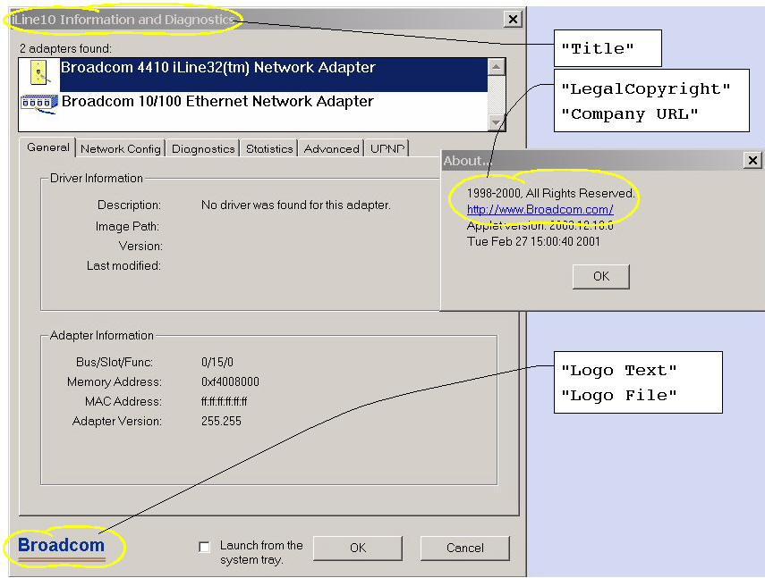
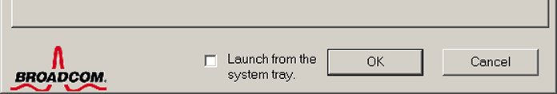
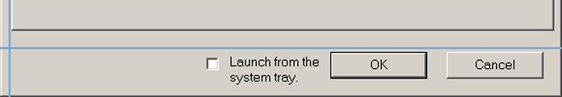
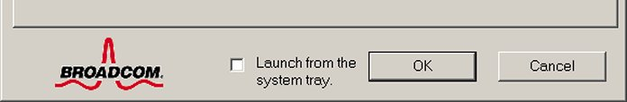

Broadcom Corporation Confidential. For evaluation use only.
HKEY_LOCAL_MACHINE\Software\bcm42dia\
The keys which control the appearance of the diagnostic applet are,
TitleLogo TextLogo FileLogo OffsetLogo Text when Logo Image is not used.Icon NameLegalCopyrightCompany URL
When entered in the registry these keys would look something like this:
REGEDIT4
[HKEY_LOCAL_MACHINE\SOFTWARE\bcm42dia]
"Logo File"="C:\\PROGRA~1\\MICROS~1\\Office\\REFEDIT.DLL,1"
"Logo Text"="Broadcom"
"Logo Offset"="40,-20"
"Icon Name"="iLine10"
"Company URL"="http://www.Broadcom.com/"
"Title"="iLine10 Information and Diagnostics"
"LegalCopyright"="1999-2011, All Rights Reserved."
Shown below is an image of the diagnostic applet with most of the customizable items marked. The main window consists of the diagnostic applet with tabbed sub-windows. The smaller window to the right is displayed when the user chose "About diagnostics..." off the system menu from the applets header.

"Logo Text" and "Logo File". These two keys are usually mutually exclusive - you would use one or the other, but usually not both. "Logo File" specifies a BMP format image that is to be placed in the lower-left corner of the diagnostic window. If "Logo File" is not specified, or if the image cannot be read for some other reason, then "Logo Text" is used put a string in place of the image. The prevent the display of any logo, do not set "Logo File" and set "Logo Text" to the empty string, i.e. "".
"Logo File" can specify an image in two ways. The simplest way is by directly specifying a BMP image file, e.g. "c:\temp\mylogo.bmp". A second method, familiar to windows programmers, is to specify a bitmap resource in a binary DLL or EXE file, e.g.
"C:\PROGRA~1\MICROS~1\Office\REFEDIT.DLL,1"
BMP format images do not provide an explicit transparency mask so it is standard practice to designate one of the non-transparent colors in the image to be a marker for the transparent pixels in the image. The control panel diagnostic applet considers the pixel at position <0, 0> (upper-left corner) in the image to designate the transparent color in the image. What that means is that whatever color is in the upper left corner of the Logo image will not appear when the Logo is actually drawn. That effectively means that the logo will appear transparent wherever that color appears and the window background color will be visible at that point.

The logo image or logo text is normally placed so that the upper edge is roughly parallel with the top of the "OK" button. and with the left edge of the logo is roughly parallel with the tabbed windows inside the diagnostic applet. That point is marked by the intersection of 2 blue lines in the image below.

You can adjust the position of the logo through the
"Logo Offset" registry key. Its value should be a string containing two signed integers
separated by a comma. This string will be parsed into an <X, Y> pixel offset from the default logo position.
For example, if you wanted to move the logo up and to the right, you would define a registry entry like this,
REGEDIT4
[HKEY_LOCAL_MACHINE\SOFTWARE\bcm42dia]
"Logo Offset"="40,-10"

Note that "Logo Offset" can also be used to adjust the position of the logo text when an image is not used.
Copyright © 2001-2011 Broadcom Corporation